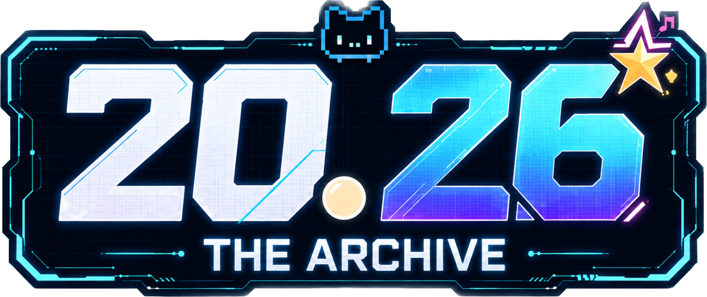

2026 ARCHIVE
PLAY × MEME
RECORDING
OUR FUN
AGAIN.

2026 ARCHIVE
PLAY × MEME
RECORDING
OUR FUN
AGAIN.

2026 ARCHIVE
PLAY × MEME
RECORDING
OUR FUN
AGAIN.
VER.0.1.0
PROJECT 20.26
// ARCHIVE CUTSCENE

ARCHIVING // RECORD 01
ARCHIVE SYSTEM v2.0.26
이 기억을 아카이빙 하세요.
E1 RECORD 01
◇DAMAGED
CONTROL 조작
ANOMALY 이상현상
BEST 최고 기록
--.--s
RESULT
PAUSED
타이머와 게임 진행이 멈춰 있습니다.
2026


0 : 20 .26


RECORD LOST
현재 접속 경로를 재구성합니다.
PLAYED 0 / 10
QA MODE